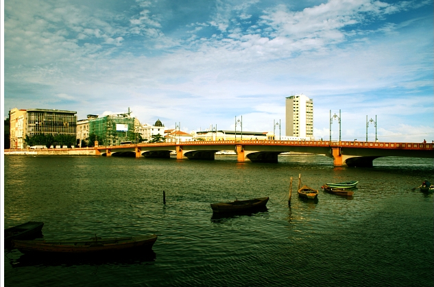
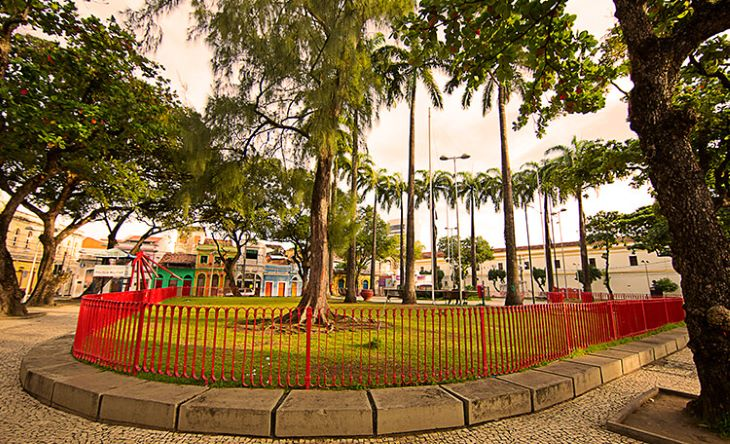

A Ponte Maurício de Nassau é uma das mais antigas pontes do Brasil e uma das atrações mais visitadas do Recife Antigo. Construída no século XVII, esta ponte histórica oferece uma vista deslumbrante do Rio Capibaribe e conecta o Bairro do Recife ao Bairro de Santo Antônio. Sua construção representa não apenas um feito arquitetônico impressionante para a época, mas também um importante marco histórico na evolução da infraestrutura urbana da região.
Ao longo dos séculos, a Ponte Maurício de Nassau testemunhou inúmeras transformações na paisagem urbana do Recife, permanecendo como um símbolo de resistência e resiliência. Hoje em dia, é não só um ponto de passagem vital para os habitantes locais, mas também um local de contemplação para visitantes que buscam apreciar a beleza natural e histórica desta cidade vibrante.
A Praça do Arsenal é um espaço cultural e histórico no Recife Antigo, conhecido por abrigar o antigo Arsenal da Marinha. Hoje em dia, a praça é palco de eventos culturais, exposições e apresentações artísticas, sendo um ponto de encontro para moradores e turistas.
Com sua atmosfera vibrante e arquitetura histórica, a Praça do Arsenal atrai visitantes de todo o mundo, que vêm explorar suas ruas de paralelepípedo e desfrutar de sua rica oferta cultural. Além disso, é um local onde a comunidade local se reúne para celebrar festivais, feiras de artesanato e outras atividades que destacam a diversidade e o patrimônio cultural da região.
